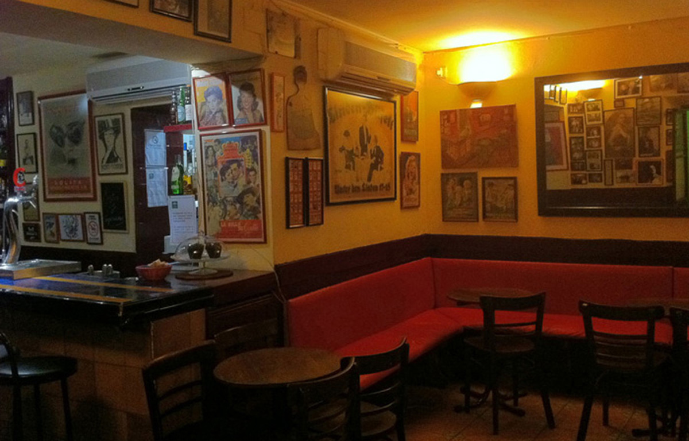
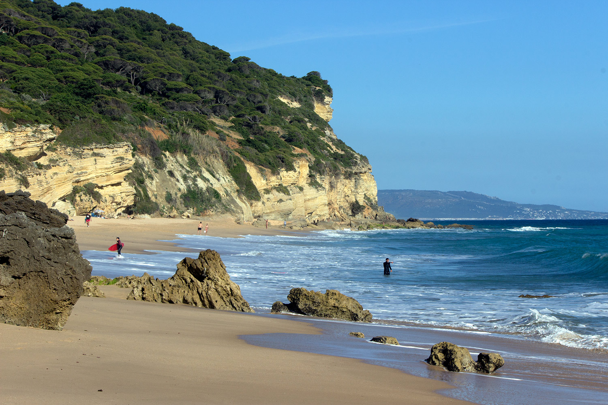
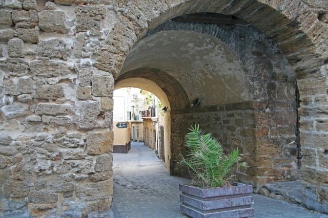
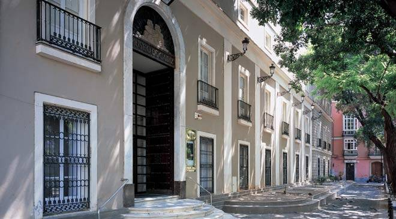
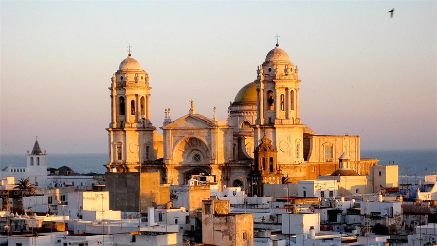
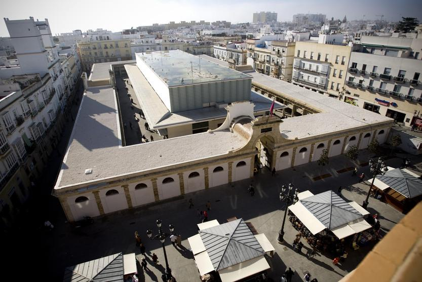
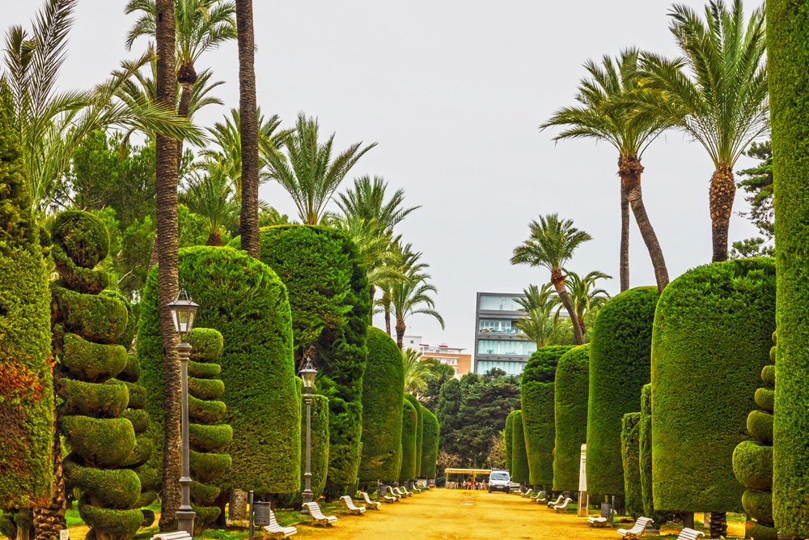

Cafè de Levant
Espai bohemi on els hagis, acull presentacions de llibres i lectures de poesia per part dels seus propis autors, i ofereix en la seva carta molestis amb olis aromàtics, embotits i tomàquets frescos.
Abierto desde las 9.00h, el Café de Levante ofrece exquisitos desayunos. Panes variados, aceites aromáticos, tomates frescos, embutidos, cruasanes, tartas y dulces variados,sin olvidar los cafés, tés, rooibos y zumos naturales. 
Torre taviera
Poden contemplar-se els 129 miradors de la ciutat, molts d’ells de propietat privada, però,sens dubte, un dels senyals més representatius del skyline de Cadis al costat de la seva imponent qualitat.
Tarifas Tarifa Normal: 6,00 Euros Tarifa Reducida: 5,00 Euros, para:Mayors de 65 anys. Estudiants presentant el carné.
Adreça: Calle Marqués del Real Tesoro, 10, 11001 Cádiz Horari: Tanca aviat: 20:00 ⋅ Obre dj. a les 10:00 Telèfon: 956 21 29 10 Província: Província de Cadis
Familia numerosa. Grups de mes de 10 persones* Persones amb discapacidad.

La Caleta
La Caleta és una platja situada al centre històric de la ciutat de Cadis (Andalusia, Espanya). Va ser port natural en el qual van fondejar vaixells de fenicis, cartaginsos i romans. És la platja de menor extensió de tota la ciutat, i aïllada de la resta. La flanquegen els castells de Sant Sebastià i Santa Catalina, enfront de l’antic Hospital de Mora, la facultat de Ciències Econòmiques i Empresarials i al costat de la Facultat de Ciències del Treball del Campus de Cadis de la universitat del mateix nom, en ple barri la Vinya. Destaca també el seu antic balneari, actualment seu del Centre d’Arqueologia Subaquàtica d’Andalusia

Les Flors
La plaça de les Flors és un popular enclavament urbà caracteritzat pels vistosos llocs de flors que ocupen la zona central. La seva habitual vitalitat es veu incrementada durant les festes de Carnestoltes, perquè al costat de la immediata plaça de la Llibertat centralitza bona part de les actuacions de carrer de les agrupacions. Tancant la plaça de les Flors i enlloc que va ocupar l’església del desaparegut Convent dels Descalços, es va inaugurar en 1930 l’edifici de Correus i Telègrafs, obra de formes eclèctiques regionalistes, realitzat en maó amb elements decoratius de ceràmica vidriada, que contrasta amb l’arquitectura tradicional de l’entorn.

Barbate
Menjar tonyina vermella d’alambraba és alguna cosa que en Cadis encara que la gastronomia no et fascinis .L’alambraba és una de les tècniques per a la captura de la tonyina que s’empra aprofitant la migració dels peixos i que consisteix a instal·lar una espècie de laberint de xarxes al pas d’aquests.
Barbate és un municipi de la província de Cadis. L’any 2005 tènia 22.496 habitants. La seva extensió és de 142 km² i té una densitat de 158,4 hab./km². Està situada a una altitud de 14 metres i a 64 quilòmetres de la capital de província
Barri del Pópulo
El barrio del Pópulo de Cádiz constituye el núcleo origen de esta milenaria ciudad
El Barri del Pópulo, situat a l’entrada del casc històric, entre l’Ajuntament i la Catedral, és el més antic de la capital gaditana i el seu veritable nucli l’origen del qual es remunta al segle XIII.
Antiga residència de mariners que va viure una època de profunda depressió s’ha convertit és un dels millors llocs per gaudir d’una copa aprofitant les agradables temperatures Gaditanes.
Museu de Cadis
Situat en la bonica i central plaça de Mina, el Museu de Cadis és un bon lloc per aprendre una mica més sobre la història de la província. No era conscient de la quantitat d’història que tenia aquesta preciosa ciutat, però quan vaig visitar el Museu vaig poder veure dos sarcòfags fenicis, estàtues romanes i belles pintures d’artistes andalusos com Zurbarán o Murillo. Per què anar? Per històries com la que us explico és un dels racons que veure a Cadis. Pelayo Quintero, un arqueòleg i director del museu de belles arts a Cadis al segle XX, va descobrir el sarcòfag masculí en 1887 i es va passar la resta de la seva vida buscant a la seva companya femenina. Segons tenia entès, estava situada bastant a prop i va passar anys excavant els fonaments.
La Catedral
Cadis té dues catedrals. La primera es va cremar l’any 1596 i la moderna va ser construït al llarg de 116 anys començant en 1776. Aquesta última catedral va ser dissenyada pel mateix arquitecte que va treballar en la preciosa Catedral de Granada. A causa del llarg període de construcció, van usar dos tipus de pedra diferents i es veu clarament en la façana. Té dos estils d’arquitectura diferents incloent el neoclàssic i certs elements barrocs. Les capelles tenen moltes pintures i relíquies de l’antiga catedral i també d’altres monestirs de tota Espanya. A més es pot observar la història de l’edifici des del punt de vista de l’arquitectura.
Mercat Central
A hores d’ara, ja heu de saber que a nosaltres ens encanta visitar els mercats de les ciutats. Aquest es troba just al costat de la Plaça de les Flors i és un dels mercats coberts més antics d’Espanya. Va començar a funcionar l’any 1837 i avui dia segueix tenint molta activitat. Nosaltres ho visitem un dissabte al matí amb la gent comprant peix, caragols i verdures.Per palpar l’ambient local i donar un cop d’ull a tots els peixos deliciosos que potser et vas a menjar després. És un dels centres de la vida quotidiana.
Parque Genovés
Aquest parc va ser fundat al segle XIX és més relaxants i bonics passejar a la capital gaditana. Hi ha molta varietat d’arbres i plantes portats de Amèrica quan Cadis va ser una ciutat de comerç. També té moltes Fonts, estàtues i ocellets al parc.Per què anar? És un parc bonic per un passeig romàntic o per la zona més animada del centre,també pots gaudir d’una gran varietat de plantes. El Parc el Genovés situat a la ciutat de Cadis (Espanya) és el jardí públic o parc més destacat de la ciutat. Es troba situat en el casc històric, al costat del mar. El seu origen està a la fi del XVIII, encara que al llarg de la seva història, ha sofert diverses ampliacions i remodelacions.
